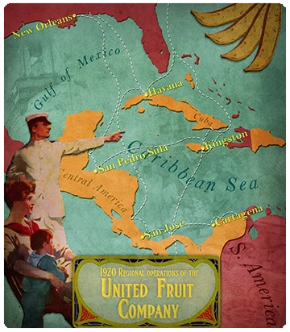
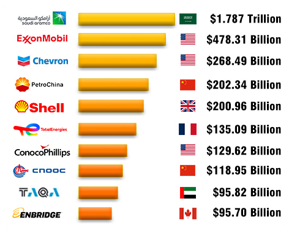
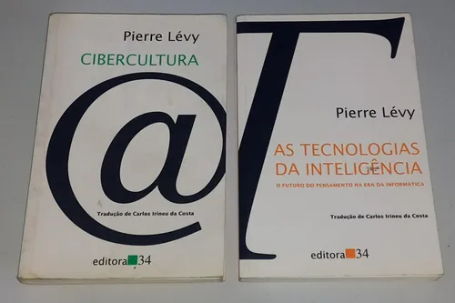
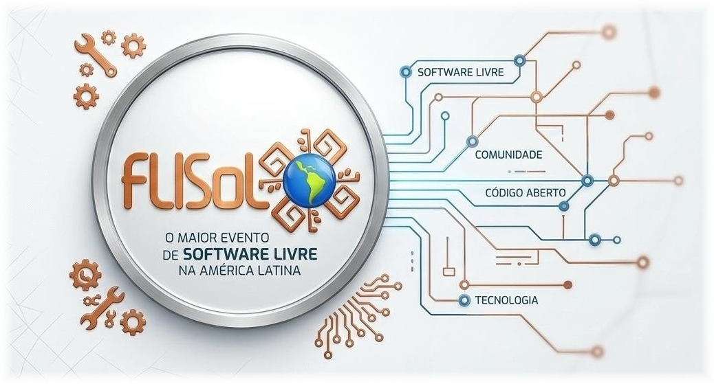

<!-- .slide: data-background-image="bigtechs_hands.png" data-background-size="contain" data-background-opacity="0.1" --> # O PODER DAS BIGTECHS ## E A SEGURANÇA DIGITAL
<!-- .slide: data-background-image="bigtechs_hiperscale.png" data-background-opacity="0.1" --> # O PODER DAS BIGTECHS -- # ETIMOLOGIA <div class="r-stack"> <p class="fragment fade-up" data-autoslide="800">"Big"<br><br><br></p> <p class="fragment fade-up" data-autoslide="800">+</p> <p class="fragment fade-up"><br><br>"Tech"</p> <div class="fragment fade-in-then-out"> <p></p><br> Big + Food </div> <div class="fragment fade-in-then-out"> <p></p><br> Big + Oil </div> <div class="fragment fade-in-then-out" style="background-color: var(--r-background-color)"> <br> Big Techs<br> <p style="font-size: 0.45em"> MS 1975<br> Apple 1976 </p> </div> <div class="fragment fade-in-then-out" style="background-color: var(--r-background-color)"> <br> </div> </div> -- # CONCEITOS-CHAVE <div class="r-stack" style="font-size: 1.5rem"> <div class="fragment fade-in-then-out" style="margin-top: 3rem"> <br> <ul> <li>Brasileiro, 1973-2005</li> <li>Filosofia da técnica, civilização tecnológica</li> <li>Não neutralidade da tecnologia</li> </ul> </div> <div class="fragment fade-in-then-out" style="margin-top: 3rem"> <p></p><br> <ul> <li>Era da informação, Sociedade em Rede</li> <li>Promessa de uma aldeia global cooperativa</li> <li>Fluxos de todos os tipos: pessoas, mercadorias, capital, informações</li> <li>Cibercultura: da oralidade, à escrita, ao hipertexto</li> <li>O virtual e o real</li> </ul> </div> <div class="fragment fade-in-then-out" style="margin-top: 3rem"> <br> <ul> <li>Ascenção dos dados e a morte da política</li> <li>Domínio feudal das empresas de tecnologia e serviços de inteligência</li> <li>Regime econômico e político contemporâneo, neoliberalismo</li> </ul> </div> <div class="fragment fade-in-then-out" style="margin-top: 3rem"> <br> <b>Mardochée Ogécime</b><br> Doutor em Ciência da Informação pela UFMG, Mestre em Ciência da informação pela UFBA, Engenheiro informático pela Universidad Tecnológica de Santiago, República Dominica. Especialista em Segurança Cibernética e em Administração de projetos pela CBTech (Universidad Tecnológica Nacional, Argentina, 2015). É bolsista do CNPQ em nível de pós-doutorado (ECI/PPGCI/UFMG, 2023). </div> <div class="fragment fade-in-then-out" style="margin-top: 3rem"> <br> <p><b>Colonialismo Digital</b> como uma atualização do conceito de terceiro mundo.</p> <p>Apesar da independência formal, as estruturas coloniais continuam operando em forma de exploração econômica, dependência tecnológica e subalterização cultural e epistêmica</p> </div> </div> -- # TECNOFEUDALISMO *Estruturas de concentração do poder e controle social, modulação da opinião pública* <br><br> # COLONIALISMO DIGITAL *Lógica de extração sistemática de dados pessoais e coletivos, aprofundamento da dependência*
<!-- .slide: data-background-image="sociedade-em-rede.jpg" data-background-opacity="0.1" --> # A SITUAÇÃO ATUAL <p style="font-size: 1.4rem; margin: 3rem 0; font-style: italic;">Posse de Trump, Meta encerra checagem de fatos nos EUA,<br>Amazon abandona políticas de diversidade, Palantir entra na guerra.</p> [Mapa dos cabos submarinos](https://sm.ign.com/t/ign_br/screenshot/default/1200-800_kxtu.960.jpg) [Constelação dos satélites da Starlink](https://satellitemap.space/vis/constellation/starlink) -- <!-- .slide: data-background-image="gnu-linux.png" data-background-size="contain" data-background-opacity="0.1" --> # AS ALTERNATIVAS <ul style="list-style: disclosure-closed"> <li>Software livre</li> <li>Hardware aberto</li> <li>Tecnociência Solidária</li> <li>Cooperativismo de plataforma</li> <li>Marco Civil da Internet</li> <li>Redes de Soberania Digital Popular</li> <li>Infraestruturas Públicas Digitais</li> <li>LGPD e Regulação das Plataformas</li> </ul>
<!-- .slide: data-background-image="seguranca-digital.jpg" data-background-opacity="0.1" --> # SEGURANÇA DIGITAL -- # CENÁRIO - Videoconferência, trabalho à distância - Educação à distância - EAD - Bancos, produtos e serviços digitais - Produção industrial da informação - Convergência tecnológica -- # MÚLTIPLAS PERDAS - Qualificação, desemprego - Comunicação pessoal e grupal, individualidade - Privacidade, nossa identidade - Controle da nossa vida/tempo, adoecimento - Aprofundamento das desigualdades, acesso à informação e às novas tecnologias -- # ASPECTOS CULTURAIS - Vender-se como alta produtividade - Eficiência, autogestão - Patrão de si mesma, individualismo - Memória seletiva, perda da atenção -- # A EDUCAÇÃO - Absorver as tecnologias, dar acesso a elas, visando ampliar as potencialidades e a inteligência humana - Não perder a visão crítica da sociedade, do impacto que a tecnologia tem sobre nossas vidas - O mais comum é ouvir dizer que a escola está obsoleta, que a escola é do séc. XIX, mas porque isso? Quem interessa essa narrativa e de qual modelo de educação essas pessoas estão tratando? -- <!-- .slide: data-background-image="infancia.png" data-background-position="center" data-background-size="contain" data-background-opacity="0.15" --> # INFÂNCIA - Sociabilidade, dependência, atraso - Modulação da subjetividade - Assédio, aliciamento, desafios - Controle de conteúdo, denúncia -- <!-- .slide: data-background-image="roubo.png" data-background-position="center" data-background-size="contain" data-background-opacity="0.15" --> # INCIDENTES - Roubo de aparelho - Acesso não autorizado - Vazamento de senhas, contas - Sistemas vulneráveis, atualização, aplicativos - Roubo de banco, aposentadoria

https://flisol.info/FLISOL2026/Curitiba